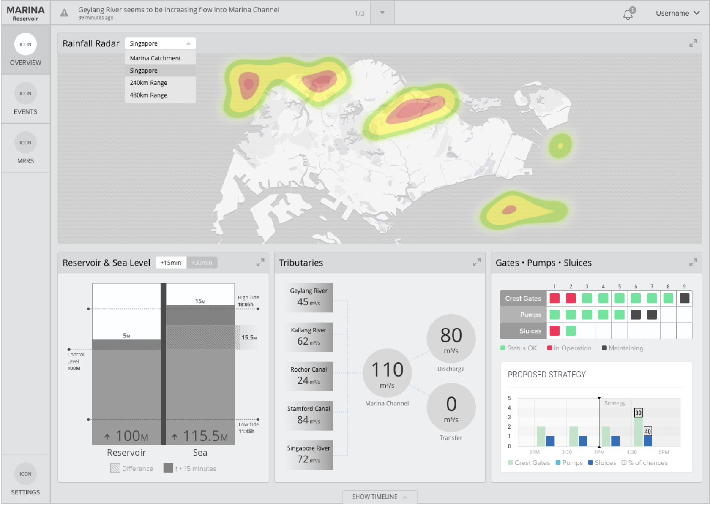

Team
2 UX/UI Designers, 2 Product Managers, PUB Department Experts, and SUEZ Business and Engineering Experts.
Suez Environnement + Singapore's National Water Agency (PUB)
Creating a predictive decision-support system that helps operators anticipate, prepare for, and manage critical events with confidence.
2 UX/UI Designers, 2 Product Managers, PUB Department Experts, and SUEZ Business and Engineering Experts.
Built domain expertise through extensive research, identified key challenges and opportunities, and transformed insights into a user-centered dashboard design.
The Marina Barrage Operations Control Room is a restricted security area closed to the general public, where PUB (Singapore's National Water Agency) officers continuously monitor water levels, tides, and operate the crest gates and drainage pumps.
During a storm or water quality incident, PUB operators need to respond quickly to manage water networks in Singapore. I worked with Suez Environnement to design an integrated dashboard that visualizes data effectively and helps operators make better decisions.
Video sourced from PUB's official website
Redesign a complex landscape of disconnected systems into a seamless operational dashboard, aligning people, processes, and technology to support faster and predictive decision-making and improve cross-functional collaboration across the entire service journey.
I led a mixed-methods discovery with PUB operators and cross-functional stakeholders, combining contextual inquiry, shadowing, interviews, and facilitated workshops. I mapped how reservoir-level decisions unfold across the service journey, then translated the research into shared operational needs and design opportunities.




The hero image was sourced from Singapore Marina Barrage.